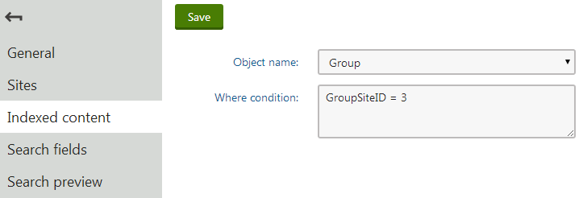
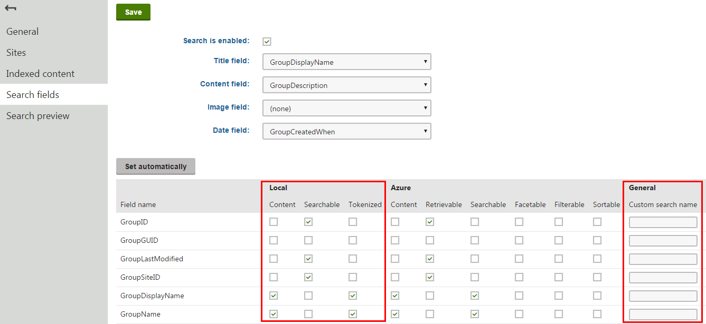

Defining local general indexes
General indexes allow searching through any type of objects used within the system. This includes items you may recognize from the administration interface, such as web parts, page templates, groups, sites, etc.
When editing locally stored general indexes in the Smart search application, specify the content on the Indexed content tab by defining the following properties:
Object name – sets the type of objects searched by the index. The index stores information representing objects in the system of the specified type. When an object is created, removed or has one of its fields modified, the index automatically updates to reflect the changes.
Where condition – sets a custom WHERE clause for the queries that retrieve data when building the index. Allows you to limit which records are included in the index.

Editing a general index - defining the content
After you select the object type, you need to configure which fields the index includes. Switch to the Search fields tab.
The options in the top part of the tab allow you to configure how the system displays objects of the given type in search results. Note that the final appearance of the search results always depends on the used search result transformation.
Title field – select the object field whose value is used for the title of search results.
Content field – the field whose value is used for the content extract of search results.
Image field – the field that contains the image displayed in search results.
Date field – the field whose value is used for the data and time displayed in search results.
The grid in the bottom section of the tab determines how the smart search indexes the object type's fields. These fields correspond with the columns of the database table that stores objects of the given type.
For locally stored search indexes, only the options under the Local and General sections of the grid apply (to learn about Azure Search general indexes, see Creating Azure Search indexes). You can set the following options for individual fields:
|
Content |
If selected, the content of the field is indexed and searchable in the standard way. Within search indexes, the values of all fields with the Content option enabled are combined into a system field named _content (this field is used to find or filter matching search items, but is NOT suitable for reading and displaying human-readable information such as search result extracts). For the purposes of standard search, Content fields are automatically tokenized by the analyzer of the used search index. |
|
Searchable |
If selected, the field is stored separately within indexes and its content can be searched using expressions in format: <field code name>:<searched phrase> See Smart search syntax for more information about field searches. Fields must be set as Searchable to be usable in Search filters and general search result filtering or ordering conditions (such as the Search condition and Search sort properties of Smart search result web parts). |
|
Tokenized |
Relevant for Searchable fields. Indicates if the content of the field is processed by the analyzer when indexing. This allows the search to find results that match individual tokens (subsets) of the field's value. If disabled, the search only returns items if the full value of the field exactly matches the search expression. If a field has both the Content and Searchable options enabled, the Tokenized option only affects the content used for field searches (content is always automatically tokenized for the purposes of standard search). |
|
Custom search name |
Relevant for Searchable fields. The specified value is used as a substitute for the field code name in <field code name>:<searched phrase> search expressions. Note: If you enter a Custom search name value, the original field name cannot be used. |

Configuring search field options for a locally stored general index
The configuration of search fields is global for objects of the given type. If you have multiple general indexes for one object type (i.e. using the same Object name), changing the search field settings for one index also affects the others.
Click Set automatically to use the default search field configuration for the object type. Confirm changes by clicking Save.
General indexes and Sites
The content of general indexes is not affected by the selection made on the Sites tab. It only determines on which websites the index will be available for use (through smart search web parts).
If you wish to configure a general index to search only through objects assigned to a specific site, we recommend using the Where condition property on the Indexed content tab. For example, a general index with the Group Object name and GroupSiteID = 3 set in its Where condition only indexes groups created under the site with a SiteID equal to 3. This approach is only possible for site-bound object types.